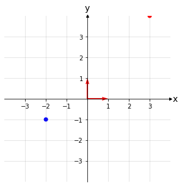
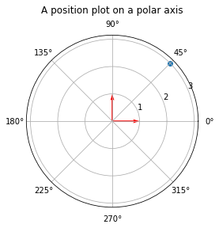

import numpy as np
import matplotlib.pyplot as plt
# function to draw vector
def draw(v1, v2):
array = np.array([[0, 0, v1[0], v1[1]],
[0,0, v2[0], v2[1]]])
X, Y, U, V = zip(*array)
ax.quiver(X, Y, U, V, angles='xy', scale_units='xy',color=['r','r'], scale=1)
plt.draw()
# enter the x- and y-values of two data points
xs = [3,-2]
ys = [4,-1]
# make them different colors in the plot
colors = ['r', 'b']
# Plot points
fig, ax = plt.subplots(figsize=(5, 5))
ax.scatter(xs, ys, c=colors)
# Draw lines connecting points to axes
#for x, y, c in zip(xs, ys, colors):
# ax.plot([x, x], [0, y], c=c, ls='--', lw=1.5, alpha=0.5)
# ax.plot([0, x], [y, y], c=c, ls='--', lw=1.5, alpha=0.5)
#Set axes scales
xmin = -3
xmax = 3
ymin = -3
ymax = 3
ax.set(xlim=(xmin-1, xmax+1), ylim=(ymin-1, ymax+1), aspect='equal')
# By default there is a box around a plot. These lines are called spines.
# Set bottom and left spines as x and y axes of coordinate system
ax.spines['bottom'].set_position('zero')
ax.spines['left'].set_position('zero')
# Remove top and right spines
ax.spines['top'].set_visible(False)
ax.spines['right'].set_visible(False)
# Create labels and place them at the end of the axes
ax.set_xlabel('x', size=14, labelpad=-24, x=1.03)
ax.set_ylabel('y', size=14, labelpad=-21, y=1.02, rotation=0)
# Create custom major ticks to determine position of tick labels
# frequency of tick labels
ticks_frequency = 1
x_ticks = np.arange(xmin, xmax+1, ticks_frequency)
y_ticks = np.arange(ymin, ymax+1, ticks_frequency)
ax.set_xticks(x_ticks[x_ticks != 0])
ax.set_yticks(y_ticks[y_ticks != 0])
# Create minor ticks placed at each integer to enable drawing of minor grid
# lines: note that this has no effect if ticks_frequency=1
ax.set_xticks(np.arange(xmin, xmax+1), minor=True)
ax.set_yticks(np.arange(ymin, ymax+1), minor=True)
# Draw major and minor grid lines
ax.grid(which='both', color='grey', linewidth=1, linestyle='-', alpha=0.2)
# Draw arrows
arrow_fmt = dict(markersize=4, color='black', clip_on=False)
ax.plot((1), (0), marker='>', transform=ax.get_yaxis_transform(), **arrow_fmt)
ax.plot((0), (1), marker='^', transform=ax.get_xaxis_transform(), **arrow_fmt)
# vector
draw([1,0],[0,1])
plt.show()

import numpy as np
import matplotlib.pyplot as plt
# function to draw vector
def draw(v1, v2):
array = np.array([[0, 0, v1[0], v1[1]],
[0,0, v2[0], v2[1]]])
X, Y, U, V = zip(*array)
ax.quiver(X, Y, U, V, angles='xy', scale_units='xy',color=['r','r'], scale=1)
plt.draw()
r = 3
theta = np.pi / 4.
ax = plt.subplot(111, projection='polar')
ax.scatter(theta, r)
ax.set_rmax(5)
ax.set_rticks([1, 2, 3, 4]) # Less radial ticks
#ax.scatter(theta, r)
ax.set_title("A position plot on a polar axis", va='bottom')
# vector
draw([0,1],[np.pi/2,1])
plt.show()
